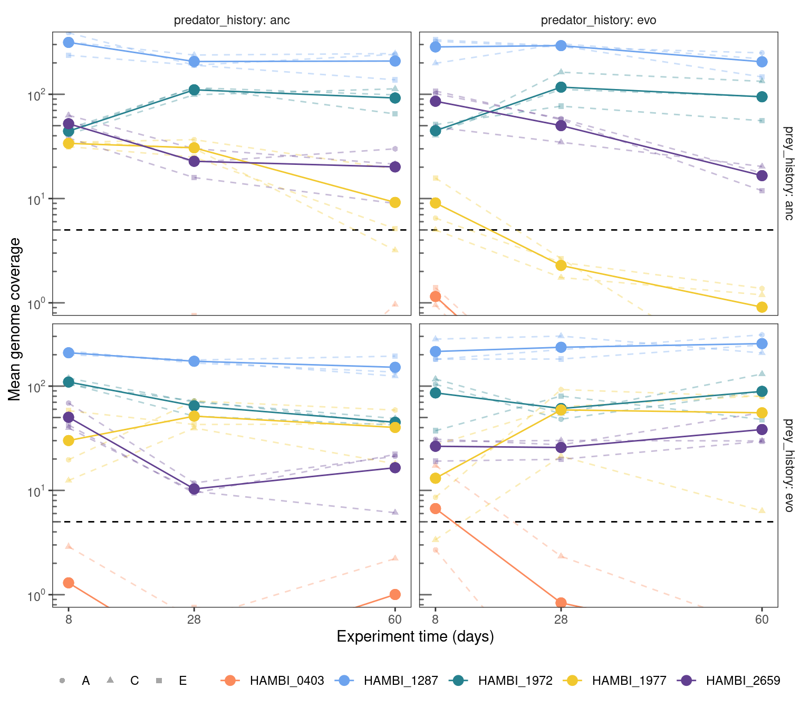
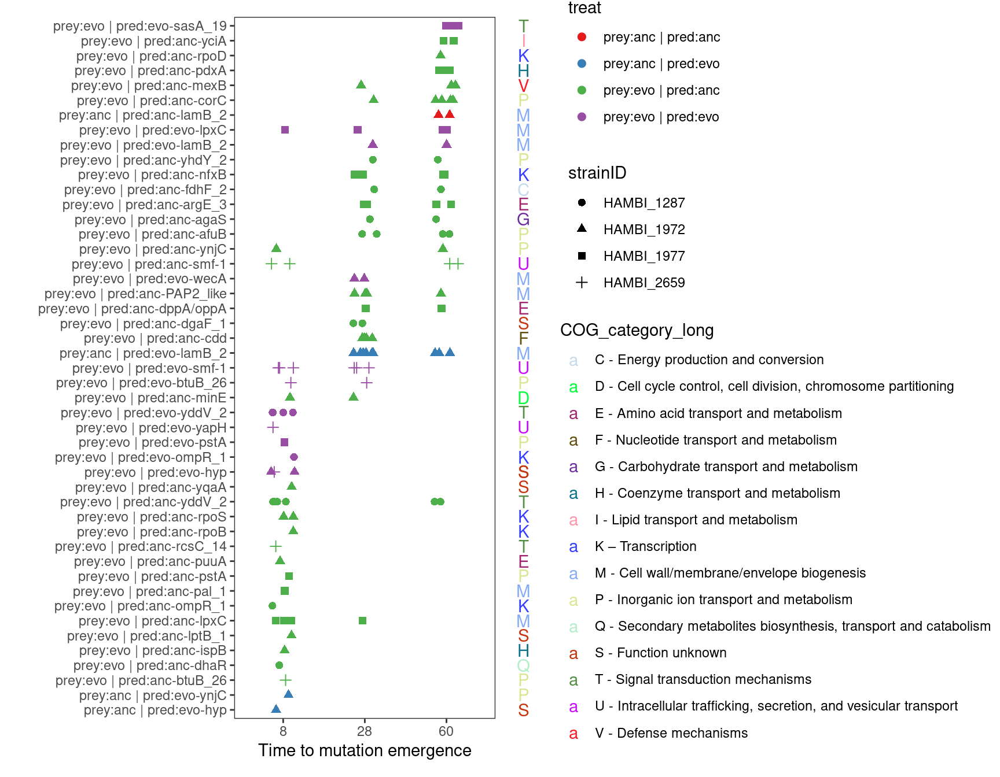

Mutational dynamics
1 Setup
Libraries and global variables
Set up some directories
2 Read data
Show/hide code
# these were already filtered in the last step
mgvars <- read_tsv(here::here(data, "metagenome_variant_timeseries.tsv"))
degentab <- read_rds(here::here(shared, "annotations_codon_degeneracy.rds"))
genome_len <- read_tsv(here::here(shared, "HAMBI_genome_len.tsv"))
# annotations
annotations <- read_rds(here::here(shared, "annotations_codon_degeneracy.rds"))
# coverage
covslurpedfmtflt <- read_tsv(here::here(data, "coverage.tsv"))
# parallel genes
par_genes <- read_tsv(here::here(data, "enriched_parallel_genes.tsv"))Show/hide code
cog_description <- tibble::tribble(
~COG_category_single, ~COG_category_long,
"J", "J - Translation, ribosomal structure and biogenesis",
"A", "A - RNA processing and modification",
"K", "K – Transcription",
"L", "L - Replication, recombination and repair",
"B", "B - Chromatin structure and dynamics",
"D", "D - Cell cycle control, cell division, chromosome partitioning",
"Y", "Y - Nuclear structure",
"V", "V - Defense mechanisms",
"T", "T - Signal transduction mechanisms",
"M", "M - Cell wall/membrane/envelope biogenesis",
"N", "N - Cell motility",
"Z", "Z – Cytoskeleton",
"W", "W - Extracellular structures",
"U", "U - Intracellular trafficking, secretion, and vesicular transport",
"O", "O - Posttranslational modification, protein turnover, chaperones",
"X", "X - Mobilome: prophages, transposons",
"C", "C - Energy production and conversion",
"G", "G - Carbohydrate transport and metabolism",
"E", "E - Amino acid transport and metabolism",
"F", "F - Nucleotide transport and metabolism",
"H", "H - Coenzyme transport and metabolism",
"I", "I - Lipid transport and metabolism",
"P", "P - Inorganic ion transport and metabolism",
"Q", "Q - Secondary metabolites biosynthesis, transport and catabolism",
"R", "R - General function prediction only",
"S", "S - Function unknown"
)
withr::with_seed(12367,
cogpal <- unname(createPalette(length(unique(cog_description$COG_category_single)), c("#F3874AFF", "#FCD125FF"), M=5000))
)
names(cogpal) <- cog_description$COG_category_long3 Metagenomic coverage
Only looking at the 5 species for which we called variants. Everything else was below a mean coverage of 5 and even calling variants at a coverage of 5 is a bit sketchy. Generally, the higher the coverage your genome is the confidence you can have calling polymorphisms where the alternate allele is rare. Basically this shows that we can really only same something of confidence for HAMBI_1287, HAMBI_1972, HAMBI_1977, and HAMBI_2659.
Show/hide code
covslurpedfmtflt %>%
filter(strainID %in% c("HAMBI_1287", "HAMBI_1972", "HAMBI_1977", "HAMBI_2659", "HAMBI_0403")) %>%
filter(!str_detect(scaffold, "plas")) %>%
left_join(distinct(dplyr::select(mgvars, sample, time_days, replicate, prey_history, predator_history)),
by = join_by(sample)) %>%
group_by(strainID, time_days, prey_history, predator_history) %>%
mutate(replicate_mean = mean(trimmed_mean)) %>%
ggplot(aes(x = time_days, y = trimmed_mean)) +
geom_hline(yintercept = 5, linetype = 2) +
geom_line(aes(color = strainID, group = interaction(strainID, prey_history, predator_history, replicate)),
alpha = 0.35, linetype = "dashed") +
geom_point(aes(color = strainID, shape = replicate),
alpha = 0.35) +
geom_line(aes(y = replicate_mean, x= time_days, color = strainID)) +
geom_point(aes(y = replicate_mean, x= time_days, color = strainID), size = 3) +
scale_color_manual(values = hambi_colors) +
facet_grid(prey_history ~ predator_history, labeller = label_both) +
labs(x = "Experiment time (days)", y = "Mean genome coverage", color = NULL, shape = NULL) +
scale_y_log10(breaks = c(1, 10, 100), labels = label_log(base = 10, digits = 3)) +
coord_cartesian(ylim = c(1, 300)) +
annotation_logticks(sides = "l", color = "grey40") +
scale_x_continuous(breaks = c(0, 8, 28, 60)) +
theme_bw() +
theme(
legend.position = "bottom",
strip.placement = 'outside',
strip.background = element_blank(),
panel.grid = element_blank())
4 Mutational spectra
Some broad scale patterns in how mutations trajectories vary between species and treatments can be observed from the mutational spectra. Below we examine how the fraction of mutations exceeding the maximum observed allele frequency \(f_{max}\) relates to different levels of \(f_{max}\) and compare this between different evolution treatments and across species.
Show/hide code
allelespectra <- mgvars %>%
dplyr::select(strainID, replicate, prey_history, predator_history, freq_alt_complete) %>%
drop_na() %>%
group_by(strainID, replicate, prey_history, predator_history) %>%
# the rbeta is to just add some noise at the lower and upper ends where there are ties
mutate(freq_alt_complete = case_when(freq_alt_complete == 1 ~ freq_alt_complete - rbeta(n(), 0.1, 10, ncp = 0),
freq_alt_complete == 0 ~ freq_alt_complete + rbeta(n(), 0.1, 10, ncp = 0),
TRUE ~ freq_alt_complete)) %>%
filter(freq_alt_complete >= 0.1) %>%
arrange(strainID, replicate, prey_history, predator_history, desc(freq_alt_complete)) %>%
group_by(strainID, replicate, prey_history, predator_history) %>%
# get 1 - emiprical cumulative distribution
mutate(f_gt_fmax = 1.001 - ecdf(freq_alt_complete)(freq_alt_complete))Show/hide code
ggplot(allelespectra, aes(x = freq_alt_complete, y = f_gt_fmax)) +
geom_step(aes(color = predator_history, linetype = replicate, group = interaction(predator_history, replicate))) +
labs(x = TeX("Maximum observed allele frequency $\\textit{f_{max}}$"), y = TeX("Fraction of mutations $\\geq \\textit{f_{max}}$")) +
facet_grid(prey_history ~ strainID, labeller = label_both) +
annotation_logticks(sides = "bl", color = "grey40") +
scale_y_continuous(trans = "log10", breaks = c(1, 0.1, 0.01, 0.001)) +
scale_x_continuous(trans = "log10", breaks = c(1, 0.1), limits = c(1e-1, 1)) +
theme_bw() +
theme(
legend.position = "bottom",
strip.placement = 'outside',
strip.background = element_blank(),
panel.grid = element_blank()
)Mutational spectra from the ancestral bacteria are of lower resolution because there are fewer mutations in those populations during the course of the experiment. Spectra from evolved bacteria are of higher resolution but include both standing genetic variation from the start of the experiment and de novo mutions. Thus, comparing ancestral to evolved bacteria spectra is not particularly meaningful. However, some insights may be gained from comparing different predator evolutionary histories nested with bacterial evolutionary histories. For evolved bacteria it appears that for 1972, 1977, and 2659 that the trajectory of \(f_{max}\) in the ancestral predator treatment drops relative to the evolved predator treatment. This would then imply that, on the whole, bacterial alleles from the evolved predator treatments increased to higher frequencies than alleles in the ancestral predator treatments. However, I am not sure there is strong support for this assertion - there are only three replicates and usually at least one replicate from the evolved predator treatment overlaps with the ancestral predator treatment. A comparison of the spectra between species indicates that, generally, some species (HAMBI_1972 and HAMBI_0403) have more high frequency mutations than others (HAMBI_1287 and HAMBI_2659).
5 Mutational dynamics
We calculated the accumulation of mutations by time t as the sum of derived allele frequencies
\[ M\left(t\right)\equiv\sum_m {\widehat f}_{pmt} \] where \({\widehat f}_{pmt}=A_{pmt}/D_{pmt}\) and A is the coverage of the alternative allele and D is the total depth of coverage. To partially mitigate noise associated with calling low frequency variants in medium-low coverage samples (~20X) we restricted our analysis to variants where \({\widehat f}_{pmt} \geq 0.15\).
5.1 Some data formatting
Show/hide code
# only denovo (i.e. not observed at time 0)
mgvars <- mgvars %>%
group_by(strainID, chrom, pos, ref, alt, replicate, prey_history, predator_history) %>%
mutate(group_id = cur_group_id()) %>%
ungroup()
# only denovo (i.e. not observed at time 0)
mgvars_denovo <- mgvars %>%
group_by(strainID, chrom, pos, ref, alt, replicate, prey_history, predator_history) %>%
mutate(group_id = cur_group_id()) %>%
mutate(denovo = if_else(freq_alt_complete == 0 & time_days == 0, 1, NA_real_)) %>%
fill(denovo, .direction = "down") %>%
relocate(group_id, freq_alt_complete, denovo) %>%
ungroup() %>%
filter(!is.na(denovo))
# only nonsynonymous variants
mgvars_ns <- mgvars %>%
filter(!str_detect(effect, "intergenic|intragenic|synonymous|fusion")) %>%
filter(!str_detect(impact, "MODIFIER"))
# only denovo (i.e. not observed at time 0) and nonsynonymous variants
mgvars_ns_denovo <- mgvars_ns %>%
group_by(strainID, chrom, pos, ref, alt, replicate, prey_history, predator_history) %>%
mutate(group_id = cur_group_id()) %>%
mutate(denovo = if_else(freq_alt_complete == 0 & time_days == 0, 1, NA_real_)) %>%
fill(denovo, .direction = "down") %>%
relocate(group_id, freq_alt_complete, denovo) %>%
ungroup() %>%
filter(!is.na(denovo))
cummt <- mgvars %>%
summarize(Mt = sum(freq_alt_complete[freq_alt_complete >= 0.15], na.rm = TRUE),
.by = c(strainID, time_days, replicate, prey_history, predator_history))
cummt_denovo <- mgvars_denovo %>%
summarize(Mt = sum(freq_alt_complete[freq_alt_complete >= 0.15], na.rm = TRUE),
.by = c(strainID, time_days, replicate, prey_history, predator_history))
cummt_ns <- mgvars_ns %>%
summarize(Mt = sum(freq_alt_complete[freq_alt_complete >= 0.15], na.rm = TRUE),
.by = c(strainID, time_days, replicate, prey_history, predator_history))
cummt_ns_denovo <- mgvars_ns_denovo %>%
summarize(Mt = sum(freq_alt_complete[freq_alt_complete >= 0.15], na.rm = TRUE),
.by = c(strainID, time_days, replicate, prey_history, predator_history))Show/hide code
plotmuttraj <- function(df, x, alpha, ylab){
ggplot(df, aes(x = time_days, y = {{ x }})) +
geom_point(aes(color = strainID, shape = replicate), alpha = alpha) +
geom_line(aes(color = strainID,
group = interaction(strainID, prey_history, predator_history, replicate)),
alpha = alpha,
linetype = "dashed") +
scale_color_manual(values = hambi_colors) +
facet_grid(prey_history ~ predator_history, labeller = label_both) +
labs(x = "Experiment time (days)", y = ylab, color = NULL, shape = NULL) +
scale_x_continuous(breaks = c(0, 8, 28, 60)) +
theme_bw() +
theme(
legend.position = "bottom",
strip.placement = 'outside',
strip.background = element_blank(),
panel.grid = element_blank()
)
}5.2 All variants
This section considers all variants from the experiment including standing genetic variation present in the evolved populations at T0 and de novo mutations that arise later. It also includes both protein changing and protein non-changing variants.
5.2.1 Cumulative mutation trajectories (M(t))
Show/hide code
5.2.2 Total mutation trajectories
Show/hide code
mgvars %>%
summarize(n = sum(freq_alt_complete > 0, na.rm = TRUE),
.by = c(strainID, time_days, replicate, prey_history, predator_history)) %>%
group_by(strainID, time_days, prey_history, predator_history) %>%
mutate(mn = mean(n)) %>%
plotmuttraj(n, 0.35, "Number of mutations") +
geom_line(aes(y = mn, x= time_days, color = strainID)) +
geom_point(aes(y = mn, x= time_days, color = strainID), size = 3) +
annotation_logticks(sides = "l", color = "grey40") +
scale_y_log10(breaks = c(1, 10, 100),
labels = label_log(base = 10, digits = 3)) 5.2.3 Fixed mutation trajectories
Show/hide code
mgvars %>%
summarize(n = sum(freq_alt_complete >= 1, na.rm = TRUE),
.by = c(strainID, time_days, replicate, prey_history, predator_history)) %>%
group_by(strainID, time_days, prey_history, predator_history) %>%
mutate(mn = mean(n)) %>%
plotmuttraj(n, 0.35, "Number of fixed mutations") +
geom_line(aes(y = mn, x= time_days, color = strainID)) +
geom_point(aes(y = mn, x= time_days, color = strainID), size = 3)5.3 De novo variants
This section considers only de novo mutations that did not exist within the evolved populations at T0. It includes both protein changing and protein non-changing variants. Thus, the results here for the ancestral bacteria populations here will be the same as in Section 5.2.
5.3.1 Cumulative mutation trajectories (M(t))
Show/hide code
fig06 <- cummt_denovo %>%
group_by(strainID, time_days, prey_history, predator_history) %>%
mutate(mn = mean(Mt)) %>%
plotmuttraj(Mt, 0.35, "M(t)") +
geom_line(aes(y = mn, x= time_days, color = strainID)) +
geom_point(aes(y = mn, x= time_days, color = strainID), size = 3)
ggsave(here::here(figs, "Mt_denovo.svg"), fig06, width=7, height=5, units="in",
device="svg")
fig065.3.2 Total mutation trajectories
Show/hide code
mgvars_denovo %>%
summarize(n = sum(freq_alt_complete > 0, na.rm = TRUE),
.by = c(strainID, time_days, replicate, prey_history, predator_history)) %>%
group_by(strainID, time_days, prey_history, predator_history) %>%
mutate(mn = mean(n)) %>%
plotmuttraj(n, 0.35, "Number of mutations") +
geom_line(aes(y = mn, x= time_days, color = strainID)) +
geom_point(aes(y = mn, x= time_days, color = strainID), size = 3) +
annotation_logticks(sides = "l", color = "grey40") +
scale_y_log10(breaks = c(1, 10, 100),
labels = label_log(base = 10, digits = 3)) 5.3.3 Fixed mutation trajectories
Show/hide code
mgvars_denovo %>%
summarize(n = sum(freq_alt_complete >= 1, na.rm = TRUE),
.by = c(strainID, time_days, replicate, prey_history, predator_history)) %>%
group_by(strainID, time_days, prey_history, predator_history) %>%
mutate(mn = mean(n)) %>%
plotmuttraj(n, 0.35, "Number of fixed mutations") +
geom_line(aes(y = mn, x= time_days, color = strainID)) +
geom_point(aes(y = mn, x= time_days, color = strainID), size = 3)5.4 Non-synonymous variants
This section considers all nonsynonymous (i.e., amino acid altering) variants from the experiment including standing genetic variation present in the evolved populations at T0 and de novo mutations that arise later.
5.4.1 Cumulative mutation trajectories (M(t))
Show/hide code
5.4.2 Total mutation trajectories
Show/hide code
mgvars_ns %>%
summarize(n = sum(freq_alt_complete > 0, na.rm = TRUE),
.by = c(strainID, time_days, replicate, prey_history, predator_history)) %>%
group_by(strainID, time_days, prey_history, predator_history) %>%
mutate(mn = mean(n)) %>%
plotmuttraj(n, 0.35, "Number of nonsynonymous mutations") +
geom_line(aes(y = mn, x= time_days, color = strainID)) +
geom_point(aes(y = mn, x= time_days, color = strainID), size = 3) +
annotation_logticks(sides = "l", color = "grey40") +
scale_y_log10(breaks = c(1, 10, 100),
labels = label_log(base = 10, digits = 3)) 5.4.3 Fixed mutation trajectories
Show/hide code
mgvars_ns %>%
summarize(n = sum(freq_alt_complete >= 1, na.rm = TRUE),
.by = c(strainID, time_days, replicate, prey_history, predator_history)) %>%
group_by(strainID, time_days, prey_history, predator_history) %>%
mutate(mn = mean(n)) %>%
plotmuttraj(n, 0.35, "Number of nonsynonymous fixed mutations") +
geom_line(aes(y = mn, x= time_days, color = strainID)) +
geom_point(aes(y = mn, x= time_days, color = strainID), size = 3)5.5 De novo, non-synonymous variants
This section considers only de novo mutations that did not exist within the evolved populations at T0 for only non-synonymous (i.e., amino acid altering) variants. Thus, the results here for the ancestral bacteria populations will be the same as in Section 5.4
5.5.1 Cumulative mutation trajectories (M(t))
Show/hide code
5.5.2 Total mutation trajectories
Show/hide code
fig13 <- mgvars_ns_denovo %>%
summarize(n = sum(freq_alt_complete > 0, na.rm = TRUE),
.by = c(strainID, time_days, replicate, prey_history, predator_history)) %>%
group_by(strainID, time_days, prey_history, predator_history) %>%
mutate(mn = mean(n)) %>%
plotmuttraj(n, 0.35, "Number of de novo nonsynonymous mutations") +
geom_line(aes(y = mn, x= time_days, color = strainID)) +
geom_point(aes(y = mn, x= time_days, color = strainID), size = 3) +
annotation_logticks(sides = "l", color = "grey40") +
scale_y_log10(breaks = c(1, 10, 100),
labels = label_log(base = 10, digits = 3))
ggsave(here::here(figs, "cummuts_denovo_nonsyn.svg"), fig13, width=7, height=5, units="in",
device="svg")
fig135.5.3 Fixed mutation trajectories
Show/hide code
mgvars_ns_denovo %>%
summarize(n = sum(freq_alt_complete >= 1, na.rm = TRUE),
.by = c(strainID, time_days, replicate, prey_history, predator_history)) %>%
group_by(strainID, time_days, prey_history, predator_history) %>%
mutate(mn = mean(n)) %>%
plotmuttraj(n, 0.35, "Number of de novo, nonsynonymous fixed mutations") +
geom_line(aes(y = mn, x= time_days, color = strainID)) +
geom_point(aes(y = mn, x= time_days, color = strainID), size = 3)6 Variant time to majority
Does the evolutionary history of prey/predator impact how long it takes alleles to reach majority status (\(f_{max} \geq 0.5\)). For every alternative allele that emerged in the experiment de novo, we plot the time that it took for that alt allele to reach majority status (i.e., the alt allele dominates the reference allele).
6.1 De novo variants (both amino acid chaning and non-changing)
Show/hide code
mgvars_denovo %>%
group_by(group_id) %>%
filter(!is.na(freq_alt_complete) & freq_alt_complete != 0) %>%
filter(freq_alt_complete >= 0.50) %>%
slice_min(time_days) %>%
slice(1) %>%
ggplot(aes(x = factor(time_days))) +
geom_bar(aes(fill = strainID)) +
scale_fill_manual(values = hambi_colors) +
facet_grid(prey_history ~ predator_history, labeller = label_both) +
labs(x = TeX("Time to major allele ( $f_{max} \\geq 0.5$ )"), y = TeX(" $n_{allele}$ with $f_{max} \\geq 0.5$ "), fill = NULL, shape = NULL) +
theme_bw() +
theme(
legend.position = "bottom",
strip.placement = 'outside',
strip.background = element_blank(),
panel.grid = element_blank())6.2 De novo variants, non-synonymous
Show/hide code
mgvars_ns_denovo %>%
group_by(group_id) %>%
filter(!is.na(freq_alt_complete) & freq_alt_complete != 0) %>%
filter(freq_alt_complete >= 0.50) %>%
slice_min(time_days) %>%
slice(1) %>%
ggplot(aes(x = factor(time_days))) +
geom_bar(aes(fill = strainID)) +
scale_fill_manual(values = hambi_colors) +
facet_grid(prey_history ~ predator_history, labeller = label_both) +
labs(x = TeX("Time to major allele ( $f_{max} \\geq 0.5$ )"), y = TeX(" $n_{allele}$ with $f_{max} \\geq 0.5$ "), fill = NULL, shape = NULL) +
theme_bw() +
theme(
legend.position = "bottom",
strip.placement = 'outside',
strip.background = element_blank(),
panel.grid = element_blank())This plot suggests that most de novo alternative alleles (either amino acid changing or non chaning) become the major allele by either day 28 or 60 for the ancestral bacteria populations. For the evolved populations this evolution seems to happen faster where some alt alleles become the major allele already by day 28 but this is only for HAMBI_2659.
7 Time to mutation emergence in parallel genes
Show/hide code
df_ttm <- left_join(par_genes, mgvars_ns_denovo) %>%
group_by(group_id) %>%
filter(!is.na(freq_alt_complete) & freq_alt_complete != 0) %>%
# uncomment to only look at emergence of minor-to-major allele transition
#filter(freq_alt_complete >= 0.50) %>%
slice_min(time_days) %>%
slice(1) %>%
ungroup() %>%
# some manual renaming
mutate(gene = case_when(locus_tag == "H1287_02172" ~ "yddV_2",
locus_tag == "H1977_02612" ~ "dppA/oppA",
locus_tag == "H1972_00299" ~ "PAP2_like",
locus_tag == "H1972_02826" ~ "ynjC",
locus_tag == "H1972_00671" ~ "yqaA",
locus_tag == "H1972_00421" ~ "hyp",
locus_tag == "H1972_02723" ~ "yifE",
locus_tag == "H2659_01789" ~ "hyp",
TRUE ~ gene)) %>%
mutate(gene_lab = if_else(is.na(gene), Preferred_name, gene),
treat = paste0("prey:", prey_history, " | pred:", predator_history)) %>%
mutate(gene_lab = if_else(gene_lab == "-", Description, gene_lab)) %>%
mutate(gene_lab = paste0(treat,"-", gene_lab)) %>%
mutate(gene_lab2 = fct_reorder(factor(gene_lab), time_days))Joining with `by = join_by(strainID, prey_history, predator_history, locus_tag,
chrom)`Show/hide code
pbar <- df_ttm %>%
distinct(gene_lab2, COG_category_long) %>%
ggplot(aes(x = 1, y = gene_lab2, fill = COG_category_long)) +
geom_tile() +
scale_fill_manual(values = cogpal) +
theme_void()
ptext <- df_ttm %>%
distinct(gene_lab2, COG_category_long, COG_category_single) %>%
replace_na(list(COG_category_long = "S - Function unknown", COG_category_single = "S")) %>%
ggplot(aes(x = 1, y = gene_lab2)) +
geom_text(aes(label = COG_category_single, color = COG_category_long)) +
scale_color_manual(values = cogpal) +
theme_void()Show/hide code
ppoint <- ggplot(df_ttm, aes(x = factor(time_days), y = gene_lab2)) +
geom_jitter(aes(color = treat, shape = strainID), size = 2, width = 0.15, height = 0) +
labs(x = "Time to mutation emergence", y = "") +
scale_color_brewer(palette = "Set1") +
theme_bw() +
theme(
legend.position = "left",
strip.placement = 'outside',
strip.background = element_blank(),
panel.grid = element_blank())Show/hide code

dhaR has two associated COG categories 1. K – Transcription 2. Q - Secondary metabolites biosynthesis transport and catabolism
smf-1 (Major fimbrial subunit SMF-1) has two associated COG categoires 1. N - Cell motility 2. U - intracellular trafficiking, secretion, and vesicular transport
8 Relationship between gene parallelism and \(f_{max}\)
Look if there is a relationship between extent of gene parallelism (\(\Delta L\)) and the max frequency that variants reach during the experiment.
As seen from the results below we observe that the degree of parallelism \(\Delta l\) or \(G_{i}\) increases with \(f_{max}\) across experimental treatment combinations and species, which is consistent with the idea that mutations with higher \(f_{max}\) are primarily being driven by positive selection across these treatments.
8.1 \(\Delta l\)
This is the same formatting that is done in the prior parallelism analysis.
Show/hide code
tofilter <- mgvars %>%
filter(time_days == 0) %>%
filter(freq_alt_complete == 1) %>%
dplyr::select(chrom, pos, ref, alt) %>%
distinct()
mgvars_filt_mb_ns <- anti_join(mgvars, tofilter, by = join_by(chrom, pos, ref, alt)) %>%
# exclude variants that were added to make complete time course
filter(!is.na(freq_alt_complete)) %>%
filter(freq_alt_complete > 0) %>%
filter(time_days != 0) %>%
filter(!str_detect(effect, "intergenic|intragenic|synonymous|fusion")) %>%
filter(!str_detect(impact, "MODIFIER")) %>%
# double check to remove any noncoding mutations
filter(locus_tag %in% pull(filter(degentab, !is.na(ns_length)), locus_tag))We now want to look at the extent of multiplicity at different binned \(f_{max}\)
Show/hide code
multiplicity_binned <- mgvars_filt_mb_ns %>%
# automatically bin f_max into 5 categories
mutate(fbin = cut_interval(freq_alt_complete, 5)) %>%
summarize(n_i = n(),
n_replicate = n_distinct(replicate),
.by = c("locus_tag", "strainID", "fbin", "prey_history", "predator_history")) %>%
group_by(locus_tag, strainID) %>%
complete(fbin, prey_history, predator_history,
fill = list(n_i = 0, n_replicate = 0)) %>%
ungroup() %>%
group_by(strainID, fbin, prey_history, predator_history) %>%
mutate(Ntot = sum(n_i)) %>%
ungroup()Make df with information about gene lengths
Show/hide code
gene_tab <- degentab %>%
dplyr::select(strainID, locus_tag, l_i = ns_length) %>%
drop_na() %>%
group_by(strainID) %>%
mutate(
# compute the number of genes in the genome
n_genes = n(),
# compute the sum of non-syn sites in genome
Ltot = sum(l_i),
# compute the average non-syn sites per gene
Lavg = mean(l_i)) %>%
ungroup() %>%
filter(strainID %in% c("HAMBI_0403", "HAMBI_1287", "HAMBI_1972", "HAMBI_1977", "HAMBI_2659")) %>%
# expanding this now to make later joining faster
expand_grid(prey_history = c("anc", "evo"),
predator_history = c("anc", "evo"),
fbin = unique(multiplicity_binned$fbin))This prepares the tibble that we can use in the next step to calculate the G scores and \(\Delta L\)
Show/hide code
g_prepped <- left_join(gene_tab, multiplicity_binned) %>%
arrange(strainID, prey_history, predator_history, fbin, locus_tag) %>%
replace_na(list(n_i = 0, n_replicate = 0)) %>%
group_by(strainID, prey_history, predator_history, fbin) %>%
fill(Ntot, .direction = "updown") %>%
ungroup() %>%
group_by(strainID, prey_history, predator_history) %>%
filter(sum(Ntot, na.rm = TRUE) != 0) %>%
ungroup()Joining with `by = join_by(strainID, locus_tag, prey_history, predator_history,
fbin)`This function calculate \(\Delta L\) but from a bootstrapping of the source dataframes to get sample means plus confidence intervals. We use rsample package hence the use of analysis(df). See the next section for implementation
Show/hide code
G_score_boot <- function(df, boot=TRUE){
if (boot) {
# convert the rsample splits to tibble
df <- rsample::analysis(df)
}
# compute the expected multiplicity value
m_exp <- unique(df$Ntot) / unique(df$n_genes)
# compute gene multiplicity for gene i
m_i <- df$n_i * unique(df$Lavg) / df$l_i
# compute the G score for each gene
g_score <- df$n_i * log(m_i / m_exp)
# net increase in log-likelihood compared to the null model of m_i / m_exp =1
# normalized to the total mutations
sum(g_score, na.rm=T) / unique(df$Ntot)
}We need the package rsample to do the boostrap analysis and we need Hmisc to get the bootstrapped confidence intervals
Show/hide code
library(rsample)
library(Hmisc)
# this is a bit slow so saving the results
g_boot <- g_prepped %>%
tidyr::nest(.by = c(strainID, prey_history, predator_history, fbin)) %>%
dplyr::mutate(boots = purrr::map(data, function(df) rsample::bootstraps(df, times = 1000))) %>%
dplyr::mutate(g_scores = purrr::map(boots, \(boot) purrr::map_dbl(boot$splits, G_score_boot))) %>%
dplyr::summarize(meanboot = purrr::map(g_scores, ggplot2::mean_cl_boot),
.by = c(strainID, prey_history, predator_history, fbin)) %>%
tidyr::unnest(cols = c(meanboot))
# Save this for later
write_rds(g_boot, here::here(data, "g_score_bootstap.rds"))Read in saved bootstrapped data
Plot bootstrapped \(\Delta l\) range with \(\Delta l\) from full dataset at different values of \(f_{max}\)
Show/hide code
pg_boot <- ggplot(g_boot, aes(x = fbin, y = y, ymin = ymin, ymax = ymax)) +
geom_pointrange(aes(color = strainID),
position = position_dodge(width = 0.5)) +
facet_grid(prey_history ~ predator_history, labeller = label_both) +
labs(x = TeX("Binned maximum observed allele frequency ($f_{max}$) "), y = TeX("Extent of parallel evolution ($\\Delta l$)"), color = NULL, shape = NULL) +
scale_color_manual(values = hambi_colors) +
scale_x_discrete(guide = guide_axis(angle = 45)) +
theme_bw() +
theme(
legend.position = "bottom",
strip.placement = 'outside',
strip.background = element_blank(),
panel.grid = element_blank())
pg_boot8.2 G score
Also calculate the G score from (Tenaillon et al. 2016) and look at the relationship with \(f_{max}\). The difference between the analysis above is that G-score is the non-summed and non-normalized form of \(\Delta l\) and it is calculated for every gene uniquely instead of at different \(f_{max}\) bins. Briefly,
\[ G_{i} = n_{i} \log \left ( \frac{m_{i}}{\overline{m}} \right ) \] where the expected multiplicity \(\overline{m}\) is
\[ \overline{m} = n_{tot}/n_{genes} \]
and the observed multiplicity is
\[ m_{i} = n_{i} \cdot \frac{\overline{L}}{L_{i}} \]
Show/hide code
multiplicity <- mgvars_filt_mb_ns %>%
dplyr::summarize(n_i = n(),
n_replicate = n_distinct(replicate),
.by = c("locus_tag", "strainID", "prey_history", "predator_history")) %>%
dplyr::group_by(strainID, prey_history, predator_history) %>%
dplyr::mutate(Ntot = sum(n_i)) %>%
dplyr::ungroup()
g_prepped_nobin <- left_join(dplyr::distinct(dplyr::select(gene_tab, -fbin)), multiplicity) %>%
arrange(strainID, prey_history, predator_history, locus_tag) %>%
replace_na(list(n_i = 0, n_replicate = 0)) %>%
group_by(strainID, prey_history, predator_history) %>%
fill(Ntot, .direction = "updown") %>%
ungroup() %>%
group_by(strainID, prey_history, predator_history) %>%
filter(sum(Ntot, na.rm = TRUE) != 0) %>%
ungroup()Joining with `by = join_by(strainID, locus_tag, prey_history,
predator_history)`Show/hide code
G_score_tidy <- function(df){
df %>%
# compute the expected multiplicity value
mutate(m_exp = Ntot / n_genes) %>%
# compute gene multiplicity for gene i
mutate(m_i = n_i * Lavg / l_i) %>%
# compute the G score for each gene
mutate(g_score = n_i * log(m_i / m_exp)) %>%
# net increase in log-likelihood compared to the null model of m_i / m_exp =1
# normalized to the total mutations
mutate(delta_l = sum(g_score, na.rm=T) / Ntot)
}
g_scores <- g_prepped_nobin %>%
group_by(strainID, prey_history, predator_history) %>%
G_score_tidy() %>%
drop_na() %>%
ungroup()
g_scores_fmax <- left_join(g_scores, mgvars,
by = join_by(strainID, locus_tag, prey_history, predator_history)) %>%
group_by(locus_tag) %>%
filter(freq_alt_complete == max(freq_alt_complete, na.rm = TRUE)) %>%
ungroup()Show/hide code
fig19 <- ggplot(g_scores_fmax, aes(x = freq_alt_complete, y = g_score)) +
geom_smooth(method = "lm", formula = 'y ~ x') +
geom_point(aes(color = strainID)) +
scale_color_manual(values = hambi_colors) +
facet_grid(prey_history ~ predator_history, labeller = label_both) +
labs(x = TeX("Maximum observed allele frequency ($f_{max}$) "), y = TeX("Extent of parallel evolution (Gene-wise $G_{i}$)"), color = NULL, shape = NULL) +
annotation_logticks(sides = "bl", color = "grey40") +
scale_x_log10() +
scale_y_log10() +
theme_bw() +
theme(
legend.position = "bottom",
strip.placement = 'outside',
strip.background = element_blank(),
panel.grid = element_blank())
ggsave(here::here(figs, "G_score_fmax.svg"), fig19, width=7, height=6, units="in",
device="svg")
fig19Linear regression for different treatment combinations (over species). Overall, we find a clear positive relationship between the gene-wise extent of parallel evolution (G score) and the maximum observed allele frequency for that gene in 3/4 treatment combinations. We also find a positive relationship for the prey: evo | predator: anc treatment combination but the significance of this relationship is unclear (P value = 0.07).
Show/hide code
g_scores_fmax %>%
tidyr::nest(data = -c(prey_history, predator_history)) %>%
dplyr::mutate(model = map(data, \(df) lm(g_score ~ freq_alt_complete, na.rm = TRUE, data = df))) %>%
dplyr::mutate(tidy = map(model, broom::tidy)) %>%
unnest(tidy) %>%
dplyr::select(-data, -model) %>%
dplyr::filter(term != "(Intercept)") %>%
arrange(p.value)Warning: There were 4 warnings in `dplyr::mutate()`.
The first warning was:
ℹ In argument: `model = map(...)`.
Caused by warning:
! In lm.fit(x, y, offset = offset, singular.ok = singular.ok, ...) :
extra argument 'na.rm' will be disregarded
ℹ Run `dplyr::last_dplyr_warnings()` to see the 3 remaining warnings.Linear regression for all different species in different treatment combinations. By including every species we lose statistical power because some species have relatively few observations. However, for all 4 species in the prey: evo | predator: anc treatment combination we find a clear positive relationship between the gene-wise extent of parallel evolution (G score) and the maximum observed allele frequency for that gene. We also find this positive relationmship for HAMBI_2659 in the prey: evo | predator: evo treatment combination.
Show/hide code
g_scores_fmax %>%
tidyr::nest(data = -c(strainID, prey_history, predator_history)) %>%
dplyr::mutate(model = map(data, \(df) lm(g_score ~ freq_alt_complete, na.rm = TRUE, data = df))) %>%
dplyr::mutate(tidy = map(model, broom::tidy)) %>%
unnest(tidy) %>%
dplyr::select(-data, -model) %>%
dplyr::filter(term != "(Intercept)") %>%
arrange(p.value)Warning: There were 15 warnings in `dplyr::mutate()`.
The first warning was:
ℹ In argument: `model = map(...)`.
Caused by warning:
! In lm.fit(x, y, offset = offset, singular.ok = singular.ok, ...) :
extra argument 'na.rm' will be disregarded
ℹ Run `dplyr::last_dplyr_warnings()` to see the 14 remaining warnings.